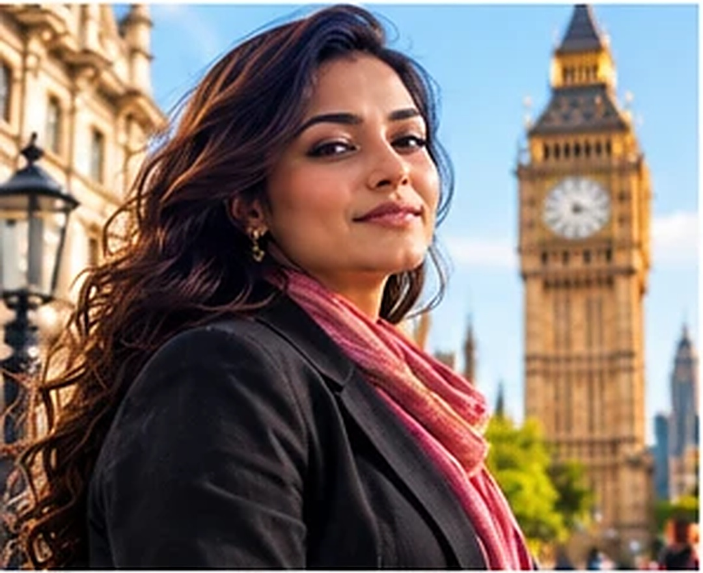

Written exams in Indian cities, then SRA admission. You land with the hard part done.
The SQE is the one exam that makes you a solicitor of England and Wales. It is open to Indian advocates, and the written parts are taken in India.

Most lawyers who want England plan it backwards: get there first, then figure out the qualification. That means unpaid years, visa pressure and a job below your level while you study.
The SQE lets you reverse the order. SQE1 is written in India. The SQE2 exemption, if granted, removes the only part that needs a UK trip. You can arrive already qualified, or close to it.
And England needs you. 57 percent of firms report difficulty hiring, and the solicitor pipeline outside London has thinned for a decade.
Rs 100 for seven live evenings that lay out the exact route from registration to the Roll of Solicitors, in order, with the SRA's own rules.
Why LawSikho: we have taken Indian lawyers through this route before, and the members featured below are the proof. Every session is live, with a mentor who answers your question, not a recording. Prem Deep Arora, lead mentor, decodes the exam and the market. Arpana Sachdeva, community manager, runs five of the seven sessions. Avlokit Yadav, counsellor, works with you one to one.
Every day: a reading PDF at 12 PM, a 5-question MCQ poll at 2 PM, the answer key at 6 PM, a learner case study at 4 PM, and the live session at 8 PM. Live only, no recordings. Complete all seven days and you receive a certificate of participation.
Stories from the programme's own success record, as presented in the community. Individual experiences, not typical results.
One more thing, and it is the thing that makes the rest worth it: the size of the market an England and Wales qualification lets you serve.
Sources: Law Society, International Data Insights Report 2025 (citing TheCityUK); LCIA 2024 casework.
The Day 1 session shows the market in detail, with the pay ranges and their sources, for each route a qualified Indian lawyer can take: UK regional firms, the Gulf, Singapore and Hong Kong, and multinational in-house teams. We do not print those ranges here, because out of context they promise more than they should.
What a second market gives you is not only income. It is time, options and a hedge against one economy. That is the investment case.
[DATES: 7 evenings, 8 PM IST, to confirm]. Rs 100, including GST. Live only, no recordings. A certificate of participation when you complete all seven days.
Join the SQE Community for Rs 100The join link arrives with your payment confirmation. Fill the profiling form and the counsellor calls you before Day 2.
Please read. LawSikho is an independent education company. It is not part of, and is not endorsed by, the Solicitors Regulation Authority, the Law Society of England and Wales, Kaplan, Pearson VUE or any government body. Their requirements, fees, dates and test centre locations are set by them, change from time to time, and should be confirmed on their own websites before you register or apply.
The community teaches the route and a plan. It does not guarantee an exam result, an exemption decision, admission, a job, clients, a visa or immigration status. SQE exemptions are decided by the SRA case by case. Learner stories describe individual experiences and are not typical results. Market and economic figures are published data from the sources named, and are not a promise of earnings. Nothing on this page is legal or immigration advice.
Live online sessions only; there are no recordings. Price Rs 100, including GST. Fee terms, including any refund, are stated at checkout.